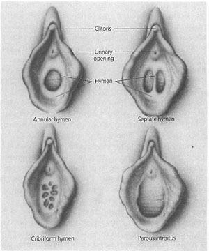

|
The Hymen Most likely, if you're old enough to be reading this article, you already know what the hymen is. But just in case you are new to the English language, or grew up in a monastery, or simply belong to a species other than human let's begin with a definition: the hymen is that flap of fleshy membrane that covers a woman’s love hole, curtaining it from prying eyes and probing penises. Most likely, if you're old enough to be reading this article, you already know what the hymen is. But just in case you are new to the English language, or grew up in a monastery, or simply belong to a species other than human let's begin with a definition: the hymen is that flap of fleshy membrane that covers a woman’s love hole, curtaining it from prying eyes and probing penises.
As seen in the photo at right, the hymen does not (usually) cover the entire vaginal opening. It grows out of the perineum region (seen here as below the vagina) and extends upward, leaving a small opening. The small opening is absolutely necessary as, without it, a woman’s monthly menstrual flow would have no place to exit the womb. Unfortunately, nature itself overlooks this fact from time to time, leading to a need for surgical intervention – literally cutting an opening into the fused flesh of the faulty or “imperforate” hymen. Without surgery, the clotted blood builds up in the woman’s uterus and vagina, eventually leading to pain, swelling, infection, and eventually death. While “imperforate” hymens are rare, it is extremely common for hymens to vary in size, thickness and shape. Because some doctors spend their lives looking at an endless parade of twats, they have sorted these variations of the hymen into certain basic types. Here are just a few:
 Now at this point you might be wondering why anyone would be so anal retentive as to classify hymens and even write whole books about them. And yet in far too many cultures past and present, a woman’s fortune could be told by the condition of her hymen. In that, if her hymen did not cover a sufficient portion of her love canal, it would be assumed that it had been entertaining visitors – i.e. that she was not a virgin. A loss of virginity could have serious consequences for the young lady in question, leading to long arguments with the folks, a lack of engagement offers, and even death. The obsession with virginity has taken many forms historically, but one that can be easily sought out on the Web is “cherry popping”. (With live footage of women losing their cherries.) Because people believe that virgins all have a thick, relatively inflexible hymen covering almost the entire vaginal opening, they expect that the first time a woman has a dick shoved inside her, her hymen should tear or “pop”, with blood either trickling or gushing forth. Since this just isn’t the way it happens (many women experience nothing more than a slight sensation of burning or stinging), people have to invent likely sounding explanations to account for the fact that some “nice girls”, who are assuredly virgins, don’t bleed and don’t tear when first skewered by hubby’s penis. The central idea in these stories is that the girl, in her rollicking, but innocent childhood, engaged in some activity that caused her hymen to tear prematurely. Such proposed activities include: horseback riding, yoga, the splits, and the more generic “sports”. A modern version of the story claims that tampon use is the culprit. The latter is actually not all that ridiculous since the act of inserting the tampon can involve a certain amount of gentle pressure being placed against the hymen (by the inserting fingers) with each tampon insertion, leading to a more elastic, pliable hymen that would not tear at intercourse. Of course some girls are inserting things larger than tampons into their vaginas, effectively “losing their virginity” to such objects as hair brushes, carrots, cucumbers, sausages, and of course commercially manufactured Dildos as well. A new wrinkle on the theme of hymen/virginity obsession is hymenoplasty. Yes, that’s right, plastic surgery for the twat. Now every woman, with the means to pay for the procedure, can be a born again virgin. But although hymen repair therapy, or hymenorraphy, may seem ludicrous to more sexually liberated westerners, in some countries it has actually saved lives. The British medical journal, Lancet, reported in 1996 that hymenorraphy reduced the murder rate of new Egyptian brides 80%. Hymen Related Trivia
|